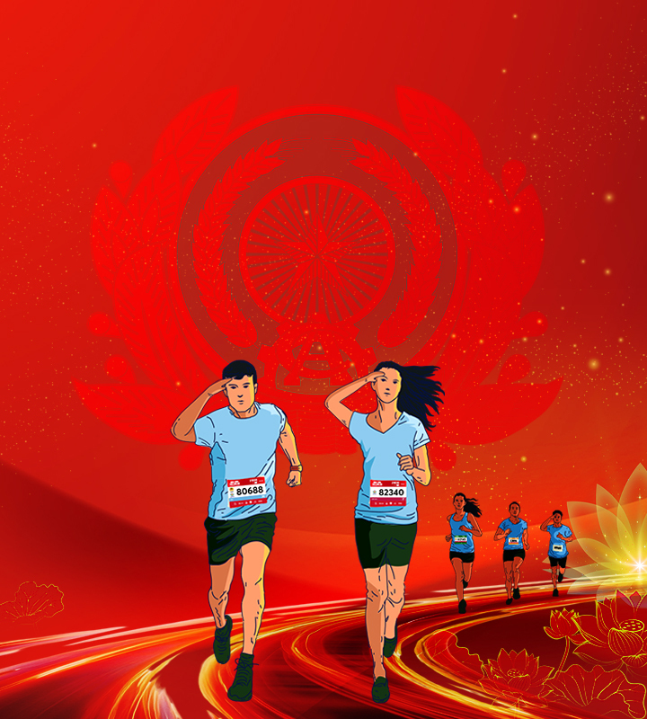
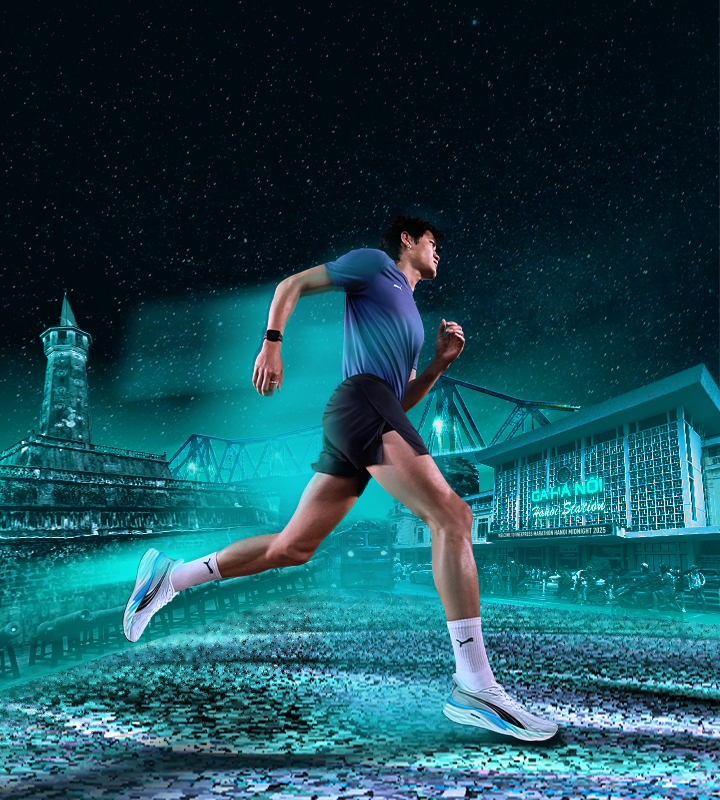
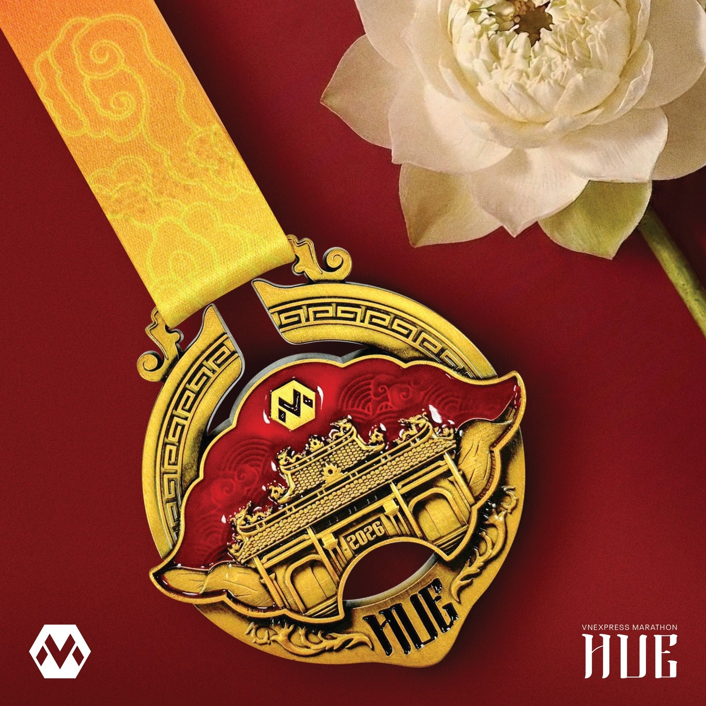

Event Communications
A small team. A large country. Two years of campaigns across Vietnam's biggest running series.
18
Events
11
Cities
132k+
Athletes
9.44B
VND Media Value

VM Volvo All-Star 2025
9.44 tỷ media value

VM Nghệ An 2025
Lên sóng VTV1 Thời sự 19h

VM Libera Nha Trang 2025
Tối ưu Keyword cho NTT

VM Hanoi Midnight 2025
3M+ reach · Mở rộng Media Partner

VM Huế 2026
Vượt 187% KPI

VM Cần Giờ 2026
Sold out 10 ngày · 223.5% KPI
Case Studies Nổi Bật
VM Green Paradise Cần Giờ 2026
NTT: Vinhomes · 5,000 BIB Sold out trong 10 ngày · T5/2026
Chiến lược triển khai
- 01.Chiến lược phễu 5 giai đoạn từ Teasing đến Post-Race, đẩy mạnh độ phủ tạo FOMO dẫn đến sold out thần tốc.
- 02.Xử lý khủng hoảng thiếu phòng: Sản xuất ngay video "Runner cắm trại" biến điểm yếu thành trải nghiệm mới lạ, tạo viral.
- 03.Khai thác USP "Xuyên rừng — chạm biển" định vị sự kiện độc nhất trong hệ thống VM.
Sản phẩm đầu ra


VM Volvo All-Star 2025
Lần đầu áp dụng chuẩn đầu vào · T4/2025
- Top article "Runner Kenya đổi đời" viral lan ra ngoài cộng đồng chạy bộ, giữ bounce rate ở mức cực thấp (2.1%).
- Khéo léo lồng ghép Soft PR cho Volvo (xe đưa đón VĐV, phát biểu CEO) vào văn phong báo chí mà không gây phản cảm.
VM Hanoi Midnight 2025
Chiến dịch Puma "Go Wild" · T12/2025
- Mở rộng Media Partner: Hợp tác 5 đơn vị media độc lập tạo ra 2.5M reach. Riêng VNRUN đạt 2M views/3 ngày (tương đương 100–150tr VND booking truyền thống).
- Xây dựng nội dung 4 tầng: NTT · Chuyên môn · Văn hoá đêm Hà Nội · Nhân vật truyền cảm hứng.
Sáng kiến Livestream Hybrid
Kết hợp Thể thao chuyên nghiệp & Truyền hình Thực tế
Tiên phong thay đổi mô hình livestream thuần thể thao bằng format lai (Hybrid). Tích hợp góc máy đa chiều (drone, GoPro, mobile), bình luận viên phong cách reality, tập trung vào hành trình cảm xúc của VĐV theo thời gian thực.
VM HCM Midnight 2025
Bản thử nghiệm đầu tiên
VM Huế 2026
Bản áp dụng tiêu chuẩn
Quản Trị Khủng Hoảng Truyền Thông
Áp lực dư luận: Khi video VĐV gục ngã gây tranh cãi
Sự cố
VĐV Yến Thư gục ngã cách đích 50m. Video lan truyền, cộng đồng mạng tạo sức ép yêu cầu BTC xóa clip để "bảo vệ hình ảnh môn thể thao".
Quyết định báo chí
Bảo vệ quan điểm giữ lại video trên trang chủ. Lập luận: Đây không phải tiêu cực — mà là minh chứng cho tinh thần thi đấu quả cảm. Xóa clip là chối bỏ sự thật.
Kết quả: Đóng vòng câu chuyện
Chỉ đạo theo sát nhân vật. 2 tháng sau, lên bài "Yến Thư tái xuất vô địch 21km Hội An". Biến khủng hoảng tiềm tàng thành câu chuyện truyền cảm hứng trọn vẹn.
Fake news: Bảo vệ uy tín giải đấu trước báo chí đối thủ
Sự cố Kỷ lục
Hồng Lệ phá kỷ lục Quốc gia nhưng không được công nhận do sự kiện thiếu giám sát trực tiếp từ Liên đoàn Điền kinh (dù đã có chứng nhận đường chạy).
Tin giả xuất hiện
Báo Lao Động đánh đồng việc thiếu giám sát bằng "Đường chạy VM chưa được đo đạc/chứng nhận" — trực tiếp tấn công uy tín kỹ thuật của giải đấu.
Xử lý cứng rắn
Làm việc trực tiếp ở cấp Tòa soạn, tung bằng chứng "Giấy chứng nhận đường chạy AIMS/Liên đoàn". Buộc cơ quan đối thủ phải đính chính ngay lập tức, ngăn khủng hoảng lan rộng.
Journalism Work
A decade of longform features, data journalism, and tactical analysis at VnExpress — Vietnam's largest news site.
Signature Works
 Báo chí dữ liệu
Báo chí dữ liệu
Olympic thay đổi thế nào khi không có Nga
Khi Nga vắng mặt tại Paris 2024, một số quốc gia khác đã vươn lên trên bảng tổng sắp huy chương.
Data analysis on how Russia's absence reshuffled the medal table at Paris 2024.
 Longform
Longform
Giải mã thành công của huyền thoại Esports Faker
Nếu có một dẫn chứng hoàn hảo nhất để kêu gọi thay đổi định kiến với Esports, đó chính là sự nghiệp của Faker.
A career portrait of esports' greatest player — and the case for taking the genre seriously.
 Báo chí dữ liệu
Báo chí dữ liệu
Phong trào chạy bộ - cú huých cho marathon Việt
Số lượng cũng như thành tích trong các nội dung về chạy bộ tăng vọt trong năm 2023.
How Vietnam's running boom became an economic and social phenomenon.
 Góc nhìn
Góc nhìn
CĐV Việt Nam và chiến thắng trên khán đài World Cup 2023
Sự cuồng nhiệt của hàng nghìn CĐV Việt Nam tại sân Eden Park — lần đầu đội tuyển nữ xuất hiện tại World Cup.
On the night Vietnam's fans made more noise than the result.
 Longform
Longform
Niềm đam mê pickleball của 'bà ngoại' Việt kiều
Bà Nguyễn Thị Quỳnh Vân, 65 tuổi, bán hết tài sản ở Mỹ để về Việt Nam truyền cảm hứng pickleball.
A 65-year-old sold everything in the US to come home and play pickleball.